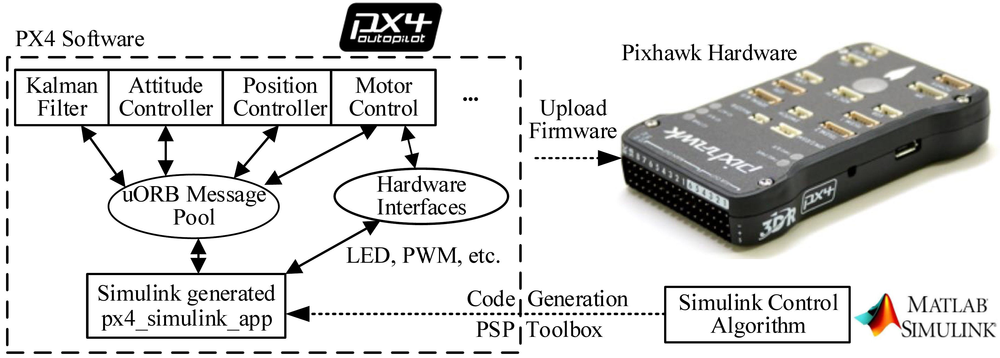

<!DOCTYPE html>
<html class="writer-html4" lang="en" >
<head>
  <meta charset="utf-8">
  
  <meta name="viewport" content="width=device-width, initial-scale=1.0">
  
  <title>3. PSP Toolbox &mdash; RflySimDoc 1.0 documentation</title>
  

  
  <link rel="stylesheet" href="../_static/css/theme.css" type="text/css" />
  <link rel="stylesheet" href="../_static/pygments.css" type="text/css" />

  
  
  
  

  
  <!--[if lt IE 9]>
    <script src="../_static/js/html5shiv.min.js"></script>
  <![endif]-->
  
    
      <script type="text/javascript" id="documentation_options" data-url_root="../" src="../_static/documentation_options.js"></script>
        <script type="text/javascript" src="../_static/jquery.js"></script>
        <script type="text/javascript" src="../_static/underscore.js"></script>
        <script type="text/javascript" src="../_static/doctools.js"></script>
        <script type="text/javascript" src="../_static/language_data.js"></script>
    
    <script type="text/javascript" src="../_static/js/theme.js"></script>

    
    <link rel="index" title="Index" href="../genindex.html" />
    <link rel="search" title="Search" href="../search.html" />
    <link rel="next" title="4. Pixhawk Hardware System" href="PixhawkHardwareSystem.html" />
    <link rel="prev" title="2. Simulink-Based Controller Design and Simulation Platform" href="ControllerDesignAndSimulationPlatform.html" /> 
</head>

<body class="wy-body-for-nav">

   
  <div class="wy-grid-for-nav">
    
    <nav data-toggle="wy-nav-shift" class="wy-nav-side">
      <div class="wy-side-scroll">
        <div class="wy-side-nav-search" >
          

          
            <a href="../index.html" class="icon icon-home" alt="Documentation Home"> RflySimDoc
          

          
          </a>

          
            
            
          

          
<div role="search">
  <form id="rtd-search-form" class="wy-form" action="../search.html" method="get">
    <input type="text" name="q" placeholder="Search docs" />
    <input type="hidden" name="check_keywords" value="yes" />
    <input type="hidden" name="area" value="default" />
  </form>
</div>

          
        </div>

        
        <div class="wy-menu wy-menu-vertical" data-spy="affix" role="navigation" aria-label="main navigation">
          
            
            
              
            
            
              <p class="caption"><span class="caption-text">Introduction</span></p>
<ul>
<li class="toctree-l1"><a class="reference internal" href="../0_Start/WhatIsRflysim.html">1. What is RflySim</a></li>
<li class="toctree-l1"><a class="reference internal" href="../0_Start/GettingStarted.html">2. Getting Started</a></li>
</ul>
<p class="caption"><span class="caption-text">Modeling</span></p>
<ul>
<li class="toctree-l1"><a class="reference internal" href="../1_Modeling/Modeling.html">1. Modeling</a></li>
</ul>
<p class="caption"><span class="caption-text">Experimental Process</span></p>
<ul>
<li class="toctree-l1"><a class="reference internal" href="../2_Configuration/Introduction.html">1. Overall Introduction</a></li>
<li class="toctree-l1"><a class="reference internal" href="../2_Configuration/SoftwareInstallation.html">2. Software Package Installation</a></li>
<li class="toctree-l1"><a class="reference internal" href="../2_Configuration/HardwareConfiguration.html">3. Hardware Platform Configuration</a></li>
</ul>
<p class="caption"><span class="caption-text">Experimental Platform Usage:</span></p>
<ul class="current">
<li class="toctree-l1"><a class="reference internal" href="Introduction.html">1. Brief Introduction to Experimental Platforms</a></li>
<li class="toctree-l1"><a class="reference internal" href="ControllerDesignAndSimulationPlatform.html">2. Simulink-Based Controller Design and Simulation Platform</a></li>
<li class="toctree-l1 current"><a class="current reference internal" href="#">3. PSP Toolbox</a><ul>
<li class="toctree-l2"><a class="reference internal" href="#simulink-pixhawk-target-blocks-library-of-psp-toolbox">3.1. Simulink Pixhawk Target Blocks Library of PSP Toolbox</a></li>
<li class="toctree-l2"><a class="reference internal" href="#instructions-for-modules-in-psp-toolbox">3.2. Instructions for Modules in PSP Toolbox</a></li>
<li class="toctree-l2"><a class="reference internal" href="#simulink-configuration-for-code-generation-of-psp-toolbox">3.3. Simulink Configuration for Code Generation of PSP Toolbox</a></li>
</ul>
</li>
<li class="toctree-l1"><a class="reference internal" href="PixhawkHardwareSystem.html">4. Pixhawk Hardware System</a></li>
<li class="toctree-l1"><a class="reference internal" href="HILSimulator.html">5. HIL Simulation Platform</a></li>
<li class="toctree-l1"><a class="reference internal" href="Examples.html">6. Examples</a></li>
</ul>
<p class="caption"><span class="caption-text">RflySim Advanced Functions</span></p>
<ul>
<li class="toctree-l1"><a class="reference internal" href="../4_Pro/Advanced.html">1. Installation Method</a></li>
<li class="toctree-l1"><a class="reference internal" href="../4_Pro/BasicFeatures.html">2. Basic Features</a></li>
<li class="toctree-l1"><a class="reference internal" href="../4_Pro/OtherTypesofVehicles.html">3. Other Types of Vehicles</a></li>
<li class="toctree-l1"><a class="reference internal" href="../4_Pro/Customizationof3DScenarios.html">4. Customization of 3D Scenarios</a></li>
<li class="toctree-l1"><a class="reference internal" href="../4_Pro/UAVSwarmControl.html">5. UAV Swarm Control</a></li>
<li class="toctree-l1"><a class="reference internal" href="../4_Pro/UAVVisionAIControl.html">6. UAV Vision/AI Control</a></li>
<li class="toctree-l1"><a class="reference internal" href="../4_Pro/FuturePlan.html">7. Future Plan</a></li>
</ul>
<p class="caption"><span class="caption-text">Course</span></p>
<ul>
<li class="toctree-l1"><a class="reference internal" href="../5_Course/Book.html">1. Book</a></li>
<li class="toctree-l1"><a class="reference internal" href="../5_Course/CourseContent.html">2. Course Content</a></li>
</ul>
<p class="caption"><span class="caption-text">Download &amp; Support:</span></p>
<ul>
<li class="toctree-l1"><a class="reference internal" href="../7_DownloadAndSupport/DownloadAndSupport.html">1. Download</a></li>
<li class="toctree-l1"><a class="reference internal" href="../7_DownloadAndSupport/DownloadAndSupport.html#faq">2. FAQ</a></li>
<li class="toctree-l1"><a class="reference internal" href="../7_DownloadAndSupport/DownloadAndSupport.html#support">3. Support</a></li>
<li class="toctree-l1"><a class="reference internal" href="../7_DownloadAndSupport/DownloadAndSupport.html#reference">4. Reference</a></li>
</ul>

            
          
        </div>
        
      </div>
    </nav>

    <section data-toggle="wy-nav-shift" class="wy-nav-content-wrap">

      
      <nav class="wy-nav-top" aria-label="top navigation">
        
          <i data-toggle="wy-nav-top" class="fa fa-bars"></i>
          <a href="../index.html">RflySimDoc</a>
        
      </nav>


      <div class="wy-nav-content">
        
        <div class="rst-content">
        
          


<div role="navigation" aria-label="breadcrumbs navigation">

  <ul class="wy-breadcrumbs">
    
      <li><a href="../index.html" class="icon icon-home"></a> &raquo;</li>
        
      <li>3. PSP Toolbox</li>
    
    
      <li class="wy-breadcrumbs-aside">
        
            
            <a href="../_sources/3_Using/PSPToolbox.rst.txt" rel="nofollow"> View page source</a>
          
        
      </li>
    
  </ul>

  
  <hr/>
</div>
          <div role="main" class="document" itemscope="itemscope" itemtype="http://schema.org/Article">
           <div itemprop="articleBody">
            
  <div class="section" id="psp-toolbox">
<h1>3. PSP Toolbox<a class="headerlink" href="#psp-toolbox" title="Permalink to this headline">¶</a></h1>
<div class="figure align-center" id="id2">

<p class="caption"><span class="caption-text">Fig. 3.13 Relationship between Simulink and Pixhawk autopilot code generation</span></p>
</div>
<p>Figure 3.13 shows the relationship among the PSP toolbox, the PX4 software, and
the Pixhawk hardware. The main features of the toolbox are summarized below.</p>
<p>(1). The toolbox can simulate and test different multicopter models and flight control
algorithms in Simulink and then automatically deploy the algorithms to the
Pixhawk autopilot.</p>
<p>(2). The toolbox provides many practical examples, including LED control, RC data
process, and attitude controller.</p>
<p>(3). The toolbox provides many interface modules to access the Pixhawk hardware
and software components.</p>
<p>(4). It automatically records flight data from sensors, actuators, and controllers
deployed by themselves.</p>
<p>(5). It can subscribe and publish uORB topic messages. All messages in the PX4
autopilot software are temporarily stored in a uORB message pool. The subscription
function can read topics of interest from the message pool, and the
publishing function can publish specific topics to the message pool for other
modules.</p>
<p>The relationship between the code generated by Simulink and the Pixhawk autopilot system is summarized below.</p>
<p>(1). The structure of a Pixhawk autopilot system includes two parts, namely the
Pixhawk hardware (similar to the computer hardware) and the PX4 software
(similar to the operating system and applications running on a computer).</p>
<p>(2) The PX4 software system can be further divided into several small modules,
which run independently in parallel multi-thread. Each module exchanges data
with other modules through the subscription and publication of uORB messages.</p>
<p>(3). After the algorithm code is generated by the PSP toolbox, it is embedded into
the PX4 software system. This will not affect the operation of the native control
modules in the PX4 software. Instead, a new independent module (with an independent
thread) named “px4_simulink_app” will be created to run in parallel
with other modules.</p>
<p>(4). As shown in Fig. 3.13, the whole code generation and deployment procedures
are presented as follows.</p>
<blockquote>
<div><p>1). The PSP toolbox generates the C/C++ code from the control algorithm
designed in Simulink.</p>
<p>2). The obtained algorithm code is imported into the PX4 source code to generate
a “px4_simulink_app” independent of other modules.</p>
<p>3). The PSP toolbox calls the compiling toolchain (Win10WSL, Msys2, or Cygwin)
to compile all the code into a “.px4” PX4 firmware file (similar to a
software installation package).</p>
<p>4). Upload the obtained firmware file to the Pixhawk hardware; then, the Pixhawk
autopilot can execute the PX4 software with the generated algorithm code.</p>
</div></blockquote>
<p>(5). The native modules in the PX4 software may assess the same hardware outputs as the generated “px4_simulink_app” module, which may cause read and
write conflicts. Therefore, in the one-key installation script, the hardware output
accessing codes of the PX4 native modules have been blocked in the last option
shown in Fig. 2.4. This will ensure that only the “px4_simulink_app” module
can send motor control signals.</p>
<blockquote>
<div><div class="figure align-center" id="id3">

<p class="caption"><span class="caption-text">Fig. 3.14 Relationship between PX4 native modules and module generated by Simulink</span></p>
</div>
</div></blockquote>
<p>(6). The generated Simulink code can also be used to replace some of the native
modules (sensors, filters, attitude controllers, etc.) of the PX4 software shown
in Fig. 3.13. However, the PX4 software code needs to be manually modified to
block the output interface of the corresponding native module (Another feasible
way is to block the module in the startup script “FirmwareROMFSpx4fmu_commoninit.drcS”).
For example, if readers want to use Simulink to replace
the filter module (input sensor data, output filter data) of the PX4 software, they
should manually block uORB publishing code of the PX4 “Position and Attitude
Estimator” module in Fig. 3.14 to prevent it from publishing estimate data. The
detailed steps are described next.</p>
<blockquote>
<div><p>1). Open the “Firmwaresrcmodulesekf2ekf2_main.cpp” file (corresponding to the code of the extended Kalman filter module).</p>
<p>2). Search for the text “orb_publish_auto(ORB_ID(vehicle_attitude)” and comment out the related code.</p>
</div></blockquote>
<div class="section" id="simulink-pixhawk-target-blocks-library-of-psp-toolbox">
<h2>3.1. Simulink Pixhawk Target Blocks Library of PSP Toolbox<a class="headerlink" href="#simulink-pixhawk-target-blocks-library-of-psp-toolbox" title="Permalink to this headline">¶</a></h2>
<p>As shown in Fig. 3.15, after installing the PSP toolbox, a “Pixhawk Target Blocks”
interface module library can be found in the Simulink library browser. These modules
provide interfaces to access the Pixhawk hardware I/Os and the PX4 internal messages.
The “Pixhawk Target Blocks” library consists of four sub-libraries, namely “ADC and
Serial library”, “Miscellaneous Utility Blocks” library, “Sensors and Actuators”
library, and “uORB Read and Write” library.</p>
<blockquote>
<div><div class="figure align-center" id="id4">

<p class="caption"><span class="caption-text">Fig. 3.15 Simulink PSP module library</span></p>
</div>
</div></blockquote>
<p>Figure 3.16 presents several key I/O interface modules in the “Sensors and Actuators”
library. These modules make it easy to acquire the sensor data or estimate data
for designing flight controllers that compute output signals for the motors, LEDs,
and buzzers.</p>
<blockquote>
<div><div class="figure align-center" id="id5">

<p class="caption"><span class="caption-text">Fig. 3.16 Schematic diagram of PSP toolbox sensor and actuator interface library</span></p>
</div>
</div></blockquote>
<p>As shown in Fig. 3.17, the PSP toolbox also provides many examples
(see folder <a class="reference external" href="https://github.com/RflySim/RflyExpCode/tree/master/code/e0/2.PSPOfficialExps">e02.PSPOfficialExps</a> ) with an official manual (see document
<a class="reference external" href="https://github.com/RflySim/RflyExpCode/blob/master/code/e0/2.PSPOfficialExps/Pixhawk_Pilot_Support_Package.pdf">e02.PSPOfficialExpsPixhawk_Pilot_Support_Package.pdf</a> for details) for
readers to be quickly familiar with functions and usage methods of PSP toolbox.</p>
<blockquote>
<div><div class="figure align-center" id="id6">

<p class="caption"><span class="caption-text">Fig. 3.17 Official examples and manuals for PSP toolbox</span></p>
</div>
</div></blockquote>
</div>
<div class="section" id="instructions-for-modules-in-psp-toolbox">
<h2>3.2. Instructions for Modules in PSP Toolbox<a class="headerlink" href="#instructions-for-modules-in-psp-toolbox" title="Permalink to this headline">¶</a></h2>
<p>(1). RC input module</p>
<p>Figure 3.18 presents the RC input module and its parameter setting box. It is
convenient to select RC channels and other information to be used by Simulink. The
definition and application of each option can be viewed by clicking the “help”
button of the box or by consulting the official PDF document. The PSP toolbox
also provides an example ( see file <a class="reference external" href="https://github.com/RflySim/RflyExpCode/blob/master/code/e0/2.PSPOfficialExps/px4demo_input_rc.slx">e02.PSPOfficialExpspx4demo_input_rc.
slx</a>) to show how to use this module.</p>
<blockquote>
<div><div class="figure align-center" id="id7">

<p class="caption"><span class="caption-text">Fig. 3.18 RC input module and its parameter setting box</span></p>
</div>
</div></blockquote>
<p>(2). PWM output module</p>
<p>Figure 3.19 depicts the PWM output module, which is used to send PWM
signals to PX4IO ports to control the motor. The PWM update frequency and
the number of output channels can be configured in the setting box.</p>
<blockquote>
<div><div class="figure align-center" id="id8">

<p class="caption"><span class="caption-text">Fig. 3.19 PWM output module and its parameter setting box</span></p>
</div>
</div></blockquote>
<p>(3). FMU output module</p>
<p>Figure 3.20 presents the FMU output module, which is used to send PWM
signals to PX4FMU ports to control the servo deflection. The PWM update
frequency and the number of output channels can be configured in the setting
box.</p>
<blockquote>
<div><div class="figure align-center" id="id9">

<p class="caption"><span class="caption-text">Fig. 3.20 FMU output module and its parameter setting box</span></p>
</div>
</div></blockquote>
<p>(4). Buzzer module</p>
<p>Figure 3.21 presents the Buzzer module, which is used when the buzzer
is required to make a warning sound. There is an example (see file
<a class="reference external" href="https://github.com/RflySim/RflyExpCode/blob/master/code/e0/2.PSPOfficialExps/px4demo_tune.slx">e02.PSPOfficialExpspx4demo_tune.slx</a>) for detailed information.</p>
<blockquote>
<div><div class="figure align-center" id="id10">

<p class="caption"><span class="caption-text">Fig. 3.21 Buzzer module and its parameter setting box</span></p>
</div>
</div></blockquote>
<p>(5). RGB_LED module</p>
<p>This module can control the blink mode and color of the LED on Pixhawk. As
shown in Fig. 3.22, the module receives two inputs, namely “Mode” and “Color”
representing the mode and color of the LED. The PSP toolbox provides an
example (see file <a class="reference external" href="https://github.com/RflySim/RflyExpCode/blob/master/code/e0/2.PSPOfficialExps/px4demo_rgbled.slx">e02.PSPOfficialExpspx4demo_rgbled.slx</a>) to study this
module.</p>
<blockquote>
<div><div class="figure align-center" id="id11">

<p class="caption"><span class="caption-text">Fig. 3.22 LED light module and its parameter setting box</span></p>
</div>
</div></blockquote>
<p>(6). Sensor combination module</p>
<p>This module can access the sensor data available in the Pixhawk autopilot,
which can then be used for controller design in Simulink. Available sensor data
include magnetometers, accelerometers, gyroscopes, barometers, and timestamps.
As shown in Fig. 3.23, the sample rate and the required sensor data
can be configured in the parameter setting box. The PSP toolbox also provides
an example (see file <a class="reference external" href="https://github.com/RflySim/RflyExpCode/blob/master/code/e0/2.PSPOfficialExps/px4demo_attitude_control.slx">e02.PSPOfficialExpspx4demo_attitude_control.slx</a>)
to study this module.</p>
<blockquote>
<div><div class="figure align-center" id="id12">

<p class="caption"><span class="caption-text">Fig. 3.23 Sensor combination module and its parameter setting box</span></p>
</div>
</div></blockquote>
<p>(7). Attitude data module</p>
<p>As shown in Fig. 3.24, the attitude data module provides an interface to
access the attitude estimate (Euler angles and quaternion). The PSP toolbox
also provides an example (see file <a class="reference external" href="https://github.com/RflySim/RflyExpCode/blob/master/code/e0/2.PSPOfficialExps/px4demo_attitude_control.slx">e02.PSPOfficialExpspx4demo_attitude_control.slx</a>)
to study this module.</p>
<blockquote>
<div><div class="figure align-center" id="id13">

<p class="caption"><span class="caption-text">Fig. 3.24 Attitude data module and its parameter setting box</span></p>
</div>
</div></blockquote>
<p>(8). GPS data module</p>
<p>This module, shown in Fig. 3.25, can be used to access the Pixhawk GPS data,
which are achieved by subscribing to the uORB topic “vehicle_gps”. Therefore,
in practical operation, it is necessary to ensure that the GPS module is inserted
into the Pixhawk hardware and then works. The PSP toolbox also provides
an example (see file <a class="reference external" href="https://github.com/RflySim/RflyExpCode/blob/master/code/e0/2.PSPOfficialExps/px4demo_gps.slx">e02.PSPOfficialExpspx4demo_gps.slx</a>) to study this
module.</p>
<blockquote>
<div><div class="figure align-center" id="id14">

<p class="caption"><span class="caption-text">Fig. 3.25 GPS data module and its parameter setting box</span></p>
</div>
</div></blockquote>
<p>(9). Battery data module</p>
<p>This module, shown in 3.26, can be used to obtain the real-time status of the
battery. It is implemented by subscribing to the uORB topic “battery_status”.
Therefore, in practical operation, it is necessary to ensure that the power module
is inserted into the Pixhawk hardware and then works correctly.</p>
<blockquote>
<div><div class="figure align-center" id="id15">

<p class="caption"><span class="caption-text">Fig. 3.26 Battery data module and its parameter setting box</span></p>
</div>
</div></blockquote>
<p>(10). uORB modules</p>
<p>These modules, presented in Fig. 3.27, are used to read or write uORB messages
from the PX4 autopilot software. All the uORB message topics supported by
the PX4 autopilot are listed in the directory “Firmwaremsg” of the software
package installation directory (configured as in Fig. 2.4; the default directory
is “C:PX4PSP”).</p>
<blockquote>
<div><div class="figure align-center" id="id16">

<p class="caption"><span class="caption-text">Fig. 3.27 uORB modules for message reading and writing</span></p>
</div>
</div></blockquote>
<p>Double-click the “uORB Write” module in Fig. 3.27, then
the obtained parameter setting box of the “uORB Write” module is presented
in Fig. 3.28, where the uORB topic name and the message variables to be sent
can be configured.</p>
<blockquote>
<div><div class="figure align-center" id="id17">

<p class="caption"><span class="caption-text">Fig. 3.28 “uORB Write” module parameter setting box</span></p>
</div>
</div></blockquote>
<p>Clicking the “Open .msg file” button in Fig. 3.28 yields the
content of the select “.msg” file (see Fig. 3.29), and clicking the “Open .msg
folder” button yields the list of all supported uORB messages (See Fig. 3.30).</p>
<blockquote>
<div><div class="figure align-center" id="id18">

<p class="caption"><span class="caption-text">Fig. 3.29 uORB message file</span></p>
</div>
<div class="figure align-center" id="id19">

<p class="caption"><span class="caption-text">Fig. 3.30 Pop-up window of “Open .msg folder” button</span></p>
</div>
</div></blockquote>
<p>There are two advanced “uORB Write” modules presented in Fig. 3.31, which
provide more convenient ways to send uORB messages.</p>
<blockquote>
<div><div class="figure align-center" id="id20">

<p class="caption"><span class="caption-text">Fig. 3.31 Advanced “uORB Write” modules and difference between them</span></p>
</div>
</div></blockquote>
<p>In fact, all modules (PWM output, RGB_LED, etc.) mentioned in this section
are implemented at the underlying code by reading and writing uORB messages.
Theoretically, by using the “uORB Read and Write” modules, all messages and
intermediate variables used in the PX4 autopilot can be accessed
by Simulink. This simplifies the implementation of more advanced functions
for controller design. The PSP toolbox also provides two examples (see
file <a class="reference external" href="https://github.com/RflySim/RflyExpCode/blob/master/code/e0/2.PSPOfficialExps/px4demo_fcn_call_uorb_example.slx">e02.PSPOfficialExpspx4demo_fcn_call_uorb_example.slx</a>, and file
<a class="reference external" href="https://github.com/RflySim/RflyExpCode/blob/master/code/e0/2.PSPOfficialExps/px4demo_write_uorb_example.slx">e02.PSPOfficialExpspx4demo_write_uorb_example.slx</a>) to study this
module.</p>
<p>In the PX4 development website, there are detailed documents for creating a
<a class="reference external" href="http://dev.px4.io/master/en/middleware/uorb.html">new uORB message</a> and receiving a <a class="reference external" href="http://dev.px4.io/master/en/middleware/mavlink.html">new MAVLink message</a> to communicate
with external devices. In addition to the uORB modules presented in Fig. 3.27,
it is convenient for the Simulink controller “px4_simulink_app” to exchange
data with external devices, such as cameras, sensors, and host computers.</p>
<p>(11). Accessing PX4 internal parameters</p>
<p>For the sake of convenience for controller parameter tuning in flight tests, the
PSP Toolbox also provides interfaces to access the PX4 internal parameters. In
this way, the parameters of the controller generated by Simulink can be tuned
online in the GCS software, instead of modifying the controller parameters in
Simulink, generating code, and uploading the firmware file again. As shown in
Fig. 3.32, an example of how to access the PX4 internal parameters is presented
in file <a class="reference external" href="https://github.com/RflySim/RflyExpCode/blob/master/code/e0/2.PSPOfficialExps/px4demo_Parameter_CSC_example.slx">e02.PSPOfficialExpspx4demo_Parameter_CSC_example.slx</a>.</p>
<blockquote>
<div><div class="figure align-center" id="id21">

<p class="caption"><span class="caption-text">Fig. 3.32 Example of PX4 internal parameter reading</span></p>
</div>
<div class="figure align-center" id="id22">

<p class="caption"><span class="caption-text">Fig. 3.33 Simulink initialization script for accessing PX4 parameters</span></p>
</div>
</div></blockquote>
<p>PX4 internal parameter access is realized by using the function
“Pixhawk_CSC.Parameter( {<cite>*</cite>, <cite>*</cite>})”, which needs to be called in the Simulink
initialization function ( click “Simple”—“Model Properties”—“Callbacks”—“InitFcn”
in the Simulink menu bar). For the example shown in Fig. 3.32, the corresponding
parameter initialization script is shown in Fig. 3.33.</p>
</div>
<div class="section" id="simulink-configuration-for-code-generation-of-psp-toolbox">
<h2>3.3. Simulink Configuration for Code Generation of PSP Toolbox<a class="headerlink" href="#simulink-configuration-for-code-generation-of-psp-toolbox" title="Permalink to this headline">¶</a></h2>
<p>(1). Preparation of the Simulink controller for code generation
The preparation procedure is described below.</p>
<p>1). As shown in Fig. 3.7, design a controller in Simulink and verify it with SIL simulations.</p>
<p>2). Copy the verified controller to a new Simulink file.</p>
<p>3). Connect the input and output ports of the controller subsystem with the input
(e.g., combined sensor module and RC input module) and output (e.g., PWM
module and uORB modules) interface modules in the PSP module library
presented in Fig. 3.15.</p>
<p>4). An example of the obtained Simulink controller file is presented in Fig. 3.34.
The example file is available in <a class="reference external" href="https://github.com/RflySim/RflyExpCode/blob/master/code/e0/2.PSPOfficialExps/px4demo_attitude_system.slx">e02.PSPOfficialExpspx4demo_attitude_system.slx</a>.</p>
<blockquote>
<div><div class="figure align-center" id="id23">

<p class="caption"><span class="caption-text">Fig. 3.34 Example of Simulink controller connecting with PSP modules</span></p>
</div>
</div></blockquote>
<p>(2). Open the Simulink setting panel</p>
<p>The new created Simulink file must be configured to support the code generation
function of the PSP toolbox. First of all, as shown in Fig. 3.35, the Simulink
setting panel can be opened by clicking “Simulation”—“Model Configuration
Parameters” in the Simulink menu bar.</p>
<blockquote>
<div><div class="figure align-center" id="id24">

<p class="caption"><span class="caption-text">Fig. 3.35 Simulink “Settings” button for different MATLAB versions</span></p>
</div>
</div></blockquote>
<p>(3). Setting for PSP code generation</p>
<p>As indicated in Fig. 3.36, go to the “Hardware Implementation” tab and select
the “Pixhawk PX4” item in the pull-down menu of the “Hardware board” option.
Then, all necessary parameter setting for PSP code generation is automatically
configured.</p>
<blockquote>
<div><div class="figure align-center" id="id25">

<p class="caption"><span class="caption-text">Fig. 3.36 Selecting target hardware</span></p>
</div>
</div></blockquote>
<p>(4). Source code compilation and firmware generation</p>
<p>Click the “Build” button in Fig. 3.37 to convert the Simulink controller into
C/C++ code and then compile it into the PX4 firmware. As shown in Fig. 3.38,
the code generation and compiling process can also be observed by clicking
the “Diagnostics” button on Simulink.</p>
<blockquote>
<div><div class="figure align-center" id="id26">

<p class="caption"><span class="caption-text">Fig. 3.37 Simulink “Build” button for different MATLAB versions</span></p>
</div>
<div class="figure align-center" id="id27">

<p class="caption"><span class="caption-text">Fig. 3.38 Simulink “Diagnostics” button for different MATLAB versions</span></p>
</div>
</div></blockquote>
<p>A successful compiling process in the
“Diagnostic Viewer” dialog is shown in Fig. 3.39, where the compiling process
is finished with the following text “Successfully generated all binary outputs”.
It can also be observed in Fig. 3.39 that a “Code Generation Report” document
will pop up after the compiling process is finished.</p>
<blockquote>
<div><div class="figure align-center" id="id28">

<p class="caption"><span class="caption-text">Fig. 3.39 Display dialog of code generation and firmware compiling</span></p>
</div>
</div></blockquote>
<p>(5). Upload PX4 firmware to Pixhawk hardware</p>
<p>Use the one-key upload function provided by the PSP toolbox to upload and burn
the firmware to the Pixhawk hardware. The specific steps are described below.</p>
<blockquote>
<div><p>1). Use a USB cable to connect the MicroUSB port (on the side of the Pixhawk
hardware) with the USB port on the computer.</p>
<p>2). As shown in Fig. 3.40, for MATLAB 2017b–2019a, click “Code”—“PX4
PSP: Upload code to Px4FMU” on the Simulink menu bar, then the firmware
will be automatically uploaded to the Pixhawk autopilot; for MATLAB 2019b
and above, since the Simulink menu is deprecated, readers can input the
“PX4Upload” command in the “Command Window” of the MATLAB interface to
upload the firmware .</p>
<div class="figure align-center" id="id29">

<p class="caption"><span class="caption-text">Fig. 3.40 Firmware upload methods for different MATLAB versions</span></p>
</div>
<p>3). Check the pop-up window carefully; sometimes, the Pixhawk autopilot has
to be re-plugged to start the firmware uploading process.</p>
</div></blockquote>
<p>After completing the above steps, the controller designed in Simulink has been
run on the Pixhawk autopilot.</p>
</div>
</div>


           </div>
           
          </div>
          <footer>
  
    <div class="rst-footer-buttons" role="navigation" aria-label="footer navigation">
      
        <a href="PixhawkHardwareSystem.html" class="btn btn-neutral float-right" title="4. Pixhawk Hardware System" accesskey="n" rel="next">Next <span class="fa fa-arrow-circle-right"></span></a>
      
      
        <a href="ControllerDesignAndSimulationPlatform.html" class="btn btn-neutral float-left" title="2. Simulink-Based Controller Design and Simulation Platform" accesskey="p" rel="prev"><span class="fa fa-arrow-circle-left"></span> Previous</a>
      
    </div>
  

  <hr/>

  <div role="contentinfo">
    <p>
        
        &copy; Copyright 2020, Rfly

    </p>
  </div>
    
    
    
    Built with <a href="http://sphinx-doc.org/">Sphinx</a> using a
    
    <a href="https://github.com/rtfd/sphinx_rtd_theme">theme</a>
    
    provided by <a href="https://readthedocs.org">Read the Docs</a>. 

</footer>

        </div>
      </div>

    </section>

  </div>
  

  <script type="text/javascript">
      jQuery(function () {
          SphinxRtdTheme.Navigation.enable(true);
      });
  </script>

  
  
    
   

</body>
</html>